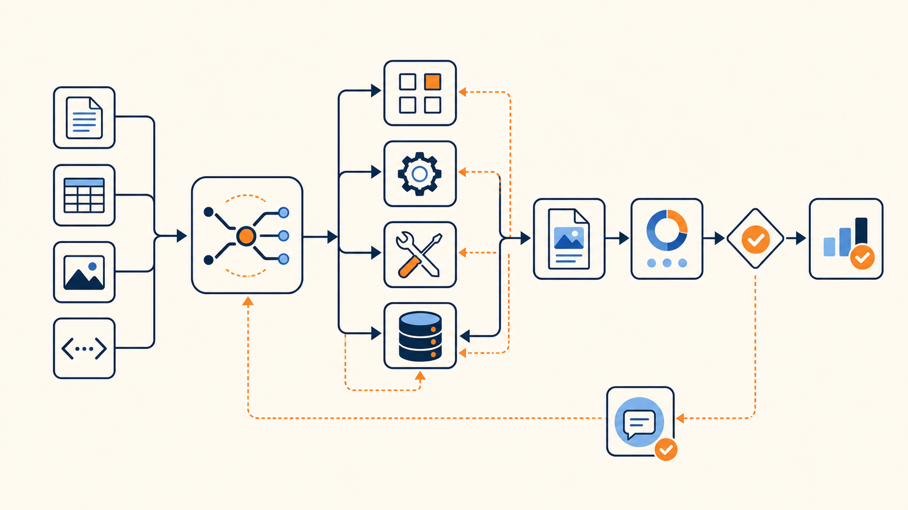

AI-native 회사는 조직도가 아니라 요청을 해결하는 시스템으로 움직인다
많은 회사가 이제 “AI를 도입했다”고 말한다. 회의록을 요약하고, 이메일을 다듬고, 코드를 더 빨리 쓰고, 사내 문서를 검색하게 만든다. 분명 생산성은 오른다. 하지만 이것만으로 회사가 AI-native가 되지는 않는다.
기존 업무 흐름은 그대로 둔 채 중간중간 AI 도구를 끼워 넣는 것과, 업무 자체를 agent가 실행 가능한 구조로 다시 설계하는 것은 다르다. 전자는 더 똑똑한 도구를 쓰는 회사이고, 후자는 회사의 작동 방식을 바꾸는 회사다.
YC의 Garry Tan과 Diana Hu가 Stanford 강의에서 말한 AI-native 회사의 핵심도 여기에 있다. 중요한 것은 어떤 모델을 쓰느냐가 아니다. 반복되는 업무를 skill로 만들고, 들어온 요청을 resolver가 적절한 skill과 memory와 tool로 보내며, 실행 결과를 eval과 feedback loop로 다시 개선하는 구조를 갖췄는가다.
이 글의 주장은 하나다.
AI-native 회사의 본질은 모델 도입이 아니라 업무 라우팅 구조의 재설계다.
회사는 더 이상 사람과 부서만으로 움직이지 않는다. 앞으로의 회사는 skill, resolver, memory, eval이 연결된 workflow operating system에 가까워진다.
기존 회사는 왜 open-loop에 머무르는가
전통적인 회사의 문제는 일이 없다는 것이 아니다. 오히려 정보와 일이 너무 많다. 회의가 있고, Slack이 있고, 문서가 있고, 고객 통화가 있고, 개인 메모와 스프레드시트가 있다. 하지만 이 정보가 다음 실행으로 매끄럽게 이어지지 않는다.
회의에서 나온 결정은 문서에 남지 않고, 고객 피드백은 제품 backlog로 연결되지 않으며, 한 번 실패한 대응은 다음 응대 기준으로 바뀌지 않는다. 사람들은 계속 바쁘지만, 회사가 배운 것이 시스템에 축적되지는 않는다.
Diana Hu가 말한 open-loop company는 이런 상태에 가깝다. 입력과 실행은 있지만, 결과가 다시 판단 기준과 업무 절차로 돌아오는 루프가 약하다. AI-native 회사가 바꾸려는 것은 바로 이 지점이다. 단순히 AI가 답을 더 빨리 쓰게 만드는 것이 아니라, 회사가 배운 것을 다음 실행에 반영하는 속도를 높이는 것이다.
회사가 실행 가능한 시스템이 되기 위한 네 가지 층
Open-loop 회사를 closed-loop 회사로 바꾸려면 단순히 더 좋은 챗봇을 붙이는 것으로는 부족하다. 회사 안의 반복 업무를 agent가 실행할 수 있는 단위로 만들고, 어떤 상황에서 어떤 업무 능력을 불러야 하는지 정하고, 이전 실행에서 배운 것을 다시 사용하며, 결과가 좋은지 나쁜지 판단하는 기준을 가져야 한다.
여기서 필요한 구성요소가 네 가지다.
- 반복 업무를 실행 가능한 능력으로 바꾸는 skill
- 요청을 적절한 실행 경로로 보내는 resolver
- 조직이 배운 것을 다시 불러오는 memory
- 품질과 판단 기준을 시스템에 넣는 eval
이 네 가지는 따로 떨어진 개념이 아니다. 함께 묶일 때 회사의 workflow operating system이 된다.
Skill: 반복 업무를 실행 가능한 능력으로 만들기
가장 먼저 바뀌어야 하는 것은 업무를 바라보는 단위다. 전통적인 회사에서는 “이 일은 누가 잘하는가”를 묻는다. AI-native 회사에서는 한 단계 더 나아가 “그 사람이 반복해서 잘하는 방식을 실행 가능한 skill로 만들 수 있는가”를 묻는다.
Skill은 반복 가능한 업무 능력이다. 단순히 프롬프트 하나를 저장해두는 것이 아니라, 특정 상황에서 어떤 입력을 받고, 어떤 도구를 쓰고, 어떤 순서로 판단하며, 어떤 형식으로 결과를 내야 하는지 정리한 업무 playbook에 가깝다.
예를 들어 이런 것들이 skill이 될 수 있다.
- 고객 인터뷰 요약하기
- 회의록에서 의사결정 추출하기
- 코드 리뷰하기
- 논문 읽고 핵심 주장 정리하기
- 가격 비교표 만들기
- 계약 리스크 체크하기
- 리포트 초안 작성하기
- Slack 공유문으로 바꾸기
영상에서 Garry는 YC의 office hour 대화를 수천 건의 transcript에서 추출해 /Office Hours skill로 만들었다고 설명한다. 창업 아이디어를 볼 때 YC 파트너들이 반복해서 묻는 질문, 예를 들어 “문제가 무엇인가”, “고객은 누구인가”, “그걸 어떻게 아는가”, “무엇을 만들 것인가” 같은 판단 루틴을 skill로 압축한 것이다.
좋은 skill에는 보통 다음이 들어간다.
언제 이 skill을 쓰는가
어떤 입력을 받는가
어떤 도구와 출처를 쓰는가
어떤 순서로 판단하는가
어떤 출력 형식을 지키는가
무엇을 하면 안 되는가
결과를 어떻게 검증하는가즉 skill은 “AI에게 잘 부탁하는 문장”이 아니다. 조직의 반복 업무를 실행 가능한 playbook으로 바꾸는 일이다.
하지만 skill이 많아질수록 새로운 문제가 생긴다. 고객 인터뷰 요약 skill, 코드 리뷰 skill, 계약 리스크 점검 skill, 보고서 작성 skill이 모두 준비되어 있다고 해도, 매번 모든 skill을 한꺼번에 불러올 수는 없다.
어떤 요청에는 어떤 skill이 필요한지 판단하는 별도의 계층이 필요하다. 여기서 resolver가 등장한다.
Resolver: AI-native 회사의 새로운 조직도
Resolver라는 말은 낯설지만, 역할은 직관적이다. 어떤 요청이 들어왔을 때 그 일이 무엇인지 판단하고, 적절한 skill, tool, memory, 사람 검토 절차로 보내는 업무 라우터다.
사람 조직에도 비슷한 구조가 있다. 법무 이슈는 법무팀으로 가고, 장애는 인프라팀으로 가며, 고객 불만은 CS나 PM에게 전달된다. 차이는 AI-native 회사에서 라우팅 대상이 사람만이 아니라는 점이다. 특정 skill, agent, database, memory, eval, human approval gate가 모두 라우팅 대상이 된다.
Garry Tan이 “a resolver is the org chart”라고 말한 이유가 여기에 있다. AI-native 조직의 조직도는 사람 이름으로만 구성되지 않는다. 무엇을 할 수 있는가, 언제 불러야 하는가, 어떤 정보와 검토 절차가 필요한가가 함께 적힌 실행 지도에 가깝다.
Garry가 든 예시는 Claude.md가 지나치게 커지는 문제다. 모든 지침을 하나의 파일에 계속 넣다 보면 어느 순간 40,000 tokens, 40,000 lines처럼 비대해진다. changelog 작성 규칙, PR 리뷰 규칙, 고객 이메일 톤, 회의록 요약 방식, 리서치 저장 규칙, 위험 판단 기준이 한꺼번에 들어간다.
이 모든 지침을 매번 agent의 context에 넣으면 비효율적이다. 더 큰 문제는 충돌이다. 어떤 규칙은 오래됐고, 어떤 규칙은 특정 상황에서만 맞으며, 어떤 규칙은 지금 요청과 전혀 관련이 없다.
Resolver는 이 문제를 푼다. “changelog를 쓸 때만 changelog 지침을 로드하라”처럼 필요한 순간에 필요한 지침을 불러오게 만든다.
요청 입력
→ 요청의 성격 판단
→ 관련 skill 선택
→ 필요한 memory만 로드
→ 적절한 tool 연결
→ 필요한 경우 human review로 라우팅
→ 결과 저장 및 eval이 구조에서 resolver는 AI 조직의 업무 라우터다. 사람 조직에서 매니저가 “이 일은 누구에게 맡겨야 하는가”를 판단했다면, agent 조직에서는 resolver가 “이 일은 어떤 skill과 memory와 tool로 처리해야 하는가”를 판단한다.
그래서 AI-native 회사는 조직도가 아니라 resolver로 움직인다고 말할 수 있다.
Resolver가 제대로 작동하려면 단순히 skill 목록만 알아서는 부족하다. 같은 요청이라도 고객의 맥락, 과거 의사결정, 도메인 규칙, 이전 실패 사례에 따라 다른 판단이 필요하기 때문이다. 그래서 resolver의 다음 조건은 memory다. 회사가 이전에 배운 것을 agent가 다시 읽을 수 있어야 한다.
Memory: 회사가 배운 것을 다시 쓰는 장치
AI-native 회사에서 memory는 단순 로그 저장소가 아니다. 로그는 과거를 보관하지만, memory는 다음 실행을 바꾼다.
사람 조직에서는 중요한 정보가 자주 사람 머릿속에 머문다. 어떤 고객이 어떤 맥락을 갖고 있는지, 어떤 판단이 과거에 실패했는지, 어떤 문서가 최신인지, 어떤 예외가 있었는지 알기 어렵다. 담당자가 바뀌면 맥락도 함께 사라진다.
AI-native 회사는 이 정보를 agent가 읽을 수 있는 형태로 남긴다.
- 고객의 맥락
- 과거 의사결정
- 반복되는 실패 사례
- 도메인 규칙
- 선호하는 출력 형식
- 검증된 출처
- 이전 실행 결과
이런 것들이 memory에 남아야 한다. 그래야 같은 실수를 반복하지 않고, 이전 실행의 결과가 다음 실행의 입력이 된다.
하지만 기억만으로는 충분하지 않다. 이전 실행을 저장했다고 해서 다음 실행이 자동으로 좋아지는 것은 아니다. 무엇이 좋은 결과였고 무엇이 실패였는지 판단하는 기준이 있어야 한다. 이 기준이 없으면 memory는 쌓이지만 학습은 일어나지 않는다.
그래서 AI-native 회사에는 eval이 필요하다.
Eval: taste를 시스템에 넣는 방법
Eval은 AI-native 조직에서 가장 과소평가되기 쉬운 층이다. 많은 팀이 먼저 자동화를 만들고, 결과가 어느 정도 나오면 나중에 평가 기준을 붙이려고 한다. 하지만 실제로는 반대에 가깝다. 무엇이 좋은 결과인지 정의하지 못하면, agent가 더 많이 실행될수록 더 많은 불확실성이 쌓인다.
Diana Hu가 강조한 taste도 이 지점과 연결된다. 그는 agentic system에서 AI slop을 피하려면 위임할 수 없는 것이 taste라고 말한다. 코드나 산출물 생성 비용은 낮아지지만, 무엇이 좋은지 나쁜지 구별하는 taste는 사라지지 않고, 그 taste가 eval로 시스템 안에 들어가야 한다는 주장이다.
AI 결과물의 품질은 generic benchmark만으로 판단할 수 없다. 영상에서도 “generic benchmarks won’t make it whether your product works”라고 말한다. MMLU 같은 공개 벤치마크가 높다고 해서 고객 응대가 좋은 것은 아니다. 코드를 많이 만들 수 있다고 해서 제품이 좋아지는 것도 아니다.
실제 업무에서는 다른 질문이 중요하다.
- 사용자의 지시를 지켰는가?
- 도메인 규칙을 어기지 않았는가?
- 고객 신뢰를 해치지 않았는가?
- 출처가 명확한가?
- 위험한 확정 표현을 피했는가?
- 비즈니스 목표에 맞는가?
- 사람이 검토해야 할 부분을 제대로 넘겼는가?
이것이 eval이다. AI-native 조직은 taste를 개인의 감각에만 맡기지 않고, 반복해서 확인 가능한 기준으로 바꿔야 한다.
Skill, resolver, memory, eval이 연결되면 비로소 한 번의 실행이 다음 실행을 바꿀 수 있다. 여기서 중요한 운영 방식이 skillify다. 잘한 일을 개인의 성과로만 남기지 않고, 조직의 반복 가능한 실행 능력으로 컴파일하는 과정이다.
Skillify: 잘한 일을 시스템으로 컴파일하기
AI-native 회사의 중요한 습관은 잘한 일을 그냥 지나치지 않는 것이다. 어떤 사람이 고객 인터뷰를 잘 요약했거나, 복잡한 계약 리스크를 잘 짚었거나, 좋은 투자 메모를 썼다면 전통적인 조직에서는 “그 사람이 잘한다”로 끝나기 쉽다.
AI-native 조직에서는 그 방식을 추출한다. 어떤 입력을 봤는지, 어떤 질문을 던졌는지, 어떤 판단 기준을 적용했는지, 어떤 출력을 만들었는지 기록한다. 그리고 그것을 다음에도 호출 가능한 skill로 만든다. 이 과정이 skillify다.
Garry는 “save this article” 같은 작업을 한 번 해보고, 입력과 출력을 보며 원하는 상태에 도달하면 skillify한다고 설명한다. 하지만 여기서 멈추면 안 된다. skill과 code를 쓰는 것은 일부일 뿐이고, unit test, LLM eval, integration test, resolver trigger, smoke test까지 붙어야 실제로 반복 가능한 시스템이 된다.
한 번 잘 수행한 업무
→ 절차를 정리
→ skill 문서화
→ trigger 정의
→ 테스트 작성
→ eval 작성
→ resolver에 연결
→ 다음부터 자동 호출이 과정이 중요한 이유는 간단하다. AI-native 회사는 일을 잘하는 개인에게만 의존하지 않는다. 잘한 일을 조직의 실행 능력으로 남긴다.
이렇게 보면 closed-loop는 별도의 추상 개념이 아니다. 업무가 실행되고, 결과가 평가되고, 성공과 실패가 memory에 남고, skill과 resolver가 업데이트되는 구조 전체가 closed-loop다. 회사가 배운 것이 다음 실행으로 돌아오는 순간, AI-native 조직은 단순 자동화를 넘어 운영체제에 가까워진다.
Closed-loop company: 회사가 배운 것을 다음 실행에 반영하는 구조
Closed-loop 회사는 정보가 흘러가기만 하는 회사가 아니라, 실행 결과가 다시 시스템을 고치는 회사다.

업무 artifact가 수집되고, agent가 그것을 읽고, 다음 action을 제안하거나 실행한다. 결과는 eval로 측정되고, 실패 trace는 memory에 남으며, 필요한 경우 skill과 resolver rule이 수정된다. 이 루프가 짧아질수록 회사는 더 빨리 배운다.
업무 artifact 수집
→ agent가 읽음
→ 다음 action 제안 또는 실행
→ 결과 측정
→ 실패 trace 저장
→ eval 개선
→ skill 개선
→ resolver 업데이트중요한 것은 자동화 그 자체가 아니다. 피드백 루프가 짧아지는 것이다.
좋은 AI-native 회사는 “AI가 대신 일하는 회사”라기보다 “회사가 배운 것을 다음 실행에 반영하는 속도가 빠른 회사”에 가깝다.
Vertical agent는 왜 workflow operating system이어야 하는가
이 구조가 특히 중요해지는 곳은 vertical agent다. 금융, 법률, 부동산, 물류, 의료 행정 같은 영역에서는 단순 질의응답만으로 좋은 제품을 만들기 어렵다. 문서가 많고, 데이터 출처가 중요하며, 판단 기준이 복잡하고, 사람 검토가 필요한 지점이 분명히 존재한다.
그래서 vertical agent는 챗봇이라기보다 특정 도메인의 workflow operating system에 가까워야 한다. 사용자의 질문을 받아 그럴듯한 답을 생성하는 것만으로는 부족하다. 요청의 성격을 파악하고, 필요한 skill을 호출하고, 신뢰할 수 있는 source를 확인하고, 위험한 판단은 human gate로 넘기며, 결과를 eval로 검증해야 한다.
예를 들어 부동산 상담 agent를 만든다고 해보자. 좋은 agent는 단순히 “이 매물 어때요?”에 답하는 챗봇이어서는 안 된다. 최소한 다음과 같은 업무 능력이 분리되어야 한다.
- 사용자 조건을 정리하는 intake skill
- 매물 설명을 구조화하는 listing parser
- 실거래가와 주변 가격을 비교하는 price comps skill
- 교통, 생활권, 개발계획을 보는 neighborhood skill
- 권리관계와 계약 리스크를 점검하는 risk review skill
- 최종 상담 메모를 작성하는 writer skill
- 사람이 반드시 확인해야 할 항목을 넘기는 human gate
- 잘못된 판단을 잡아내는 eval set
이때 resolver는 요청의 성격을 보고 적절한 skill을 호출한다.
사용자가 “전세 보증금이 안전한지 봐줘”라고 하면 단순 요약 skill을 부르면 안 된다. 계약 단계, 보증금, 선순위 권리, 등기부, 보증보험 가능성, 주변 시세, 추가 확인 질문을 다루는 risk review workflow로 보내야 한다.
사용자가 “이 동네 살기 어때?”라고 하면 권리 리스크가 아니라 생활권, 교통, 학교, 편의시설, 소음, 개발계획을 보는 neighborhood workflow로 보내야 한다.
이 차이를 만드는 것이 resolver다.
Vertical agent의 경쟁력은 모델 자체보다 도메인 workflow를 얼마나 잘 구조화했는가에서 나온다. 어떤 source를 믿을지, 어떤 판단은 보류해야 할지, 어떤 결과는 사람에게 넘겨야 할지, 어떤 실패를 eval로 남길지 정리되어 있어야 한다.
그렇다면 실제로 이런 시스템은 어떻게 설계해야 할까. 추상적으로 “resolver가 필요하다”거나 “eval을 붙여야 한다”고 말하는 것만으로는 부족하다. 업무를 어떤 단위로 쪼개고, skill card에는 무엇을 넣고, resolver map은 어떻게 만들며, human gate와 eval은 어디에 둘지 정해야 한다.
업무 라우터와 skill system은 어떻게 설계해야 하나
AI-native workflow는 한 번에 거대한 agent를 만드는 방식으로 시작하면 실패하기 쉽다. 먼저 반복되는 요청을 작게 나누고, 각 요청을 skill로 만들고, resolver가 어떤 조건에서 어떤 skill을 부를지 정해야 한다.
실무적으로는 다음 순서가 가장 안전하다.
1. 먼저 업무를 요청 단위로 쪼갠다
조직의 모든 일을 한 번에 agent에게 맡기려고 하면 실패한다. 먼저 반복되는 요청을 모아야 한다.
예를 들면 이런 식이다.
- 고객 질문에 답하기
- 문서에서 핵심 정보 추출하기
- 리스크 항목 점검하기
- 가격이나 수치를 비교하기
- 회의록에서 action item 뽑기
- 최종 보고서 초안 작성하기
좋은 단위는 “한 사람이 반복해서 처리하던 일”이다. 너무 크면 자동화하기 어렵고, 너무 작으면 resolver가 복잡해진다.
2. 각 업무를 skill card로 만든다
업무 단위가 정해지면 각각을 skill card로 만든다. 여기에는 최소한 다음이 들어가야 한다.
Skill name
- 언제 호출되는가
- 어떤 입력이 필요한가
- 어떤 출처를 믿을 수 있는가
- 어떤 tool을 사용할 수 있는가
- 어떤 순서로 처리하는가
- 출력 형식은 무엇인가
- 금지해야 할 행동은 무엇인가
- 어떤 경우 human review로 넘기는가
- 결과 품질은 어떻게 평가하는가이때 중요한 것은 “잘 써줘”가 아니라 “어떤 조건에서 어떻게 처리할지”를 적는 것이다. skill은 문체 지시가 아니라 업무 playbook이어야 한다.
3. Resolver map을 만든다
그다음 resolver map을 만든다. 이것은 요청과 skill을 연결하는 라우팅 표다.
요청 유형 → 호출할 skill → 필요한 memory/tool → human gate 여부예시는 이렇다.
YouTube 링크 분석
→ transcript-analysis skill
→ transcript fetch tool, source note memory
→ human gate 없음
계약 리스크 질문
→ risk-review skill
→ 공식 데이터 source, checklist memory
→ human gate 필요
블로그 초안 요청
→ publishing-outline skill + writer skill
→ style memory, source transcript
→ human review 필요처음부터 복잡한 classifier를 만들 필요는 없다. 초기 resolver는 사람이 읽을 수 있는 라우팅 규칙이면 충분하다. 중요한 것은 “이 요청은 왜 이 skill로 가는가”가 설명 가능해야 한다는 점이다.
4. Memory를 업무별로 나눈다
모든 memory를 항상 불러오면 resolver를 둔 의미가 없다. memory도 업무별로 나눠야 한다.
- 사용자 선호 memory
- 도메인 규칙 memory
- 출처/데이터 source memory
- 실패 사례 memory
- 출력 스타일 memory
- 프로젝트별 context memory
Resolver는 요청을 보고 필요한 memory만 불러와야 한다. 예를 들어 글쓰기 요청에는 스타일 memory가 중요하지만, 리스크 검토에는 도메인 규칙과 공식 출처 memory가 중요하다.
5. Human gate를 명시한다
모든 업무를 agent가 끝까지 처리하면 안 된다. 특히 vertical domain에서는 사람 검토가 필요한 지점이 있다.
- 법률/세무/투자 판단
- 계약 체결 여부
- 금전 거래
- 고객에게 발송되는 최종 메시지
- 출처가 불확실한 데이터 기반 판단
- 리스크 등급이 높은 경우
좋은 resolver는 자동화할 일뿐 아니라 멈춰야 할 지점도 안다. AI-native 조직에서 human gate는 예외 처리가 아니라 설계 요소다.
6. Eval을 나중이 아니라 처음부터 붙인다
Skill system이 실패하는 이유는 대부분 eval이 없기 때문이다. agent가 무언가를 만들었는데 좋은지 나쁜지 판정 기준이 없다.
각 skill에는 최소한 이런 eval 질문이 붙어야 한다.
- 필요한 입력을 모두 확인했는가?
- 출처를 구분했는가?
- 확정하면 안 되는 것을 확정하지 않았는가?
- 출력 형식을 지켰는가?
- 사람에게 넘겨야 할 항목을 넘겼는가?
- 이전 실패 사례를 반복하지 않았는가?
eval은 거창한 benchmark일 필요가 없다. 처음에는 체크리스트여도 된다. 중요한 것은 실패를 다음 skill 개선으로 되돌리는 루프다.
7. 마지막으로 skillify loop를 운영한다
한 번 처리하고 끝내면 AI-native가 아니다. 반복되는 성공과 실패를 skill system에 반영해야 한다.
실행
→ 결과 검토
→ 실패/성공 trace 저장
→ skill 수정
→ resolver rule 수정
→ eval 추가
→ 다음 실행에 반영이 루프가 돌아가기 시작하면 회사의 업무 방식이 바뀐다. 사람의 노하우가 개인에게만 머무르지 않고, agent가 호출할 수 있는 실행 자산으로 쌓인다.
AI-native 회사의 moat는 workflow에 있다
모델은 계속 좋아질 것이다. 더 긴 context, 더 빠른 추론, 더 강한 coding 능력이 나올 것이다. 하지만 모든 회사가 비슷한 모델을 쓸 수 있다면, 장기적인 차이는 모델 접근권에서만 생기지 않는다.
차이는 workflow에 쌓인다.
- 어떤 업무를 skill로 만들었는가
- 어떤 요청을 어떤 skill로 라우팅하는가
- 어떤 memory를 쌓고 있는가
- 어떤 eval로 품질을 관리하는가
- 어떤 human gate를 두는가
- 어떤 고객 피드백이 다음 실행에 반영되는가
이것들이 쌓이면 회사만의 agent operating system이 된다.
AI-native 회사의 moat는 “우리도 GPT를 쓴다”가 아니다. 우리 업무가 얼마나 실행 가능한 형태로 구조화되어 있는가다.
결론: 회사는 점점 실행 가능한 시스템이 된다
AI-native 회사는 사람을 없애는 회사가 아니다. 사람의 판단과 업무 절차를 더 명확한 시스템으로 바꾸는 회사다.
반복 업무는 skill이 되고, 업무 배정은 resolver가 하며, 조직의 기억은 memory에 남는다. 품질 기준은 eval로 표현되고, 실패는 다음 실행을 고치는 데이터가 된다. 이 구조가 돌아가기 시작하면 회사는 단순히 AI를 사용하는 조직이 아니라, 스스로의 업무 방식을 계속 개선하는 실행 시스템이 된다.
앞으로의 회사는 “AI를 얼마나 많이 쓰는가”만으로 나뉘지 않을 것이다. 더 중요한 질문은 이것이다.
우리 회사의 업무는 agent가 실행하고 개선할 수 있는 형태로 구조화되어 있는가?
이 질문에 답할 수 있는 회사가 AI-native 회사다.
FAQ
AI-native 회사는 AI 도구를 쓰는 회사와 무엇이 다른가?
AI 도구를 쓰는 회사는 기존 업무 위에 AI를 얹는다. AI-native 회사는 업무 자체를 agent가 실행 가능한 skill, resolver, memory, eval 구조로 재설계한다.
Resolver는 AI agent에서 무엇을 뜻하나?
Resolver는 업무 라우터다. 들어온 요청의 성격을 판단하고 적절한 skill, tool, memory, human gate로 보내는 계층이다.
Skillify는 무엇인가?
Skillify는 한 번 잘 수행한 업무를 재사용 가능한 skill로 바꾸는 과정이다. 단순 prompt 저장이 아니라 trigger, test, eval, resolver 연결까지 포함한다.
AI-native 조직에서 eval은 왜 중요한가?
Eval은 조직의 taste와 품질 기준을 시스템에 넣는 방법이다. generic benchmark가 아니라 실제 제품과 도메인에서 좋은 결과인지 판단하는 기준이 필요하다.
Vertical AI agent의 핵심 경쟁력은 무엇인가?
Vertical AI agent의 경쟁력은 모델 자체보다 도메인 workflow를 얼마나 잘 구조화했는가에서 나온다. 어떤 source를 믿고, 어떤 판단을 보류하며, 언제 사람에게 넘길지 정리되어 있어야 한다.
Source note: 이 글은 YC의 Garry Tan과 Diana Hu가 Stanford 강의에서 설명한 skill, resolver, memory, eval, closed-loop company 개념을 바탕으로 썼다. 다만 단순 영상 요약이 아니라, vertical agent와 workflow operating system 설계 관점에서 해석을 덧붙였다.